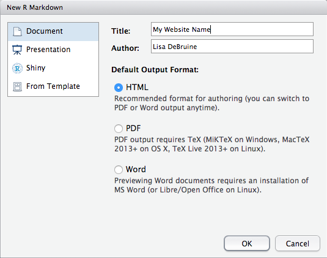
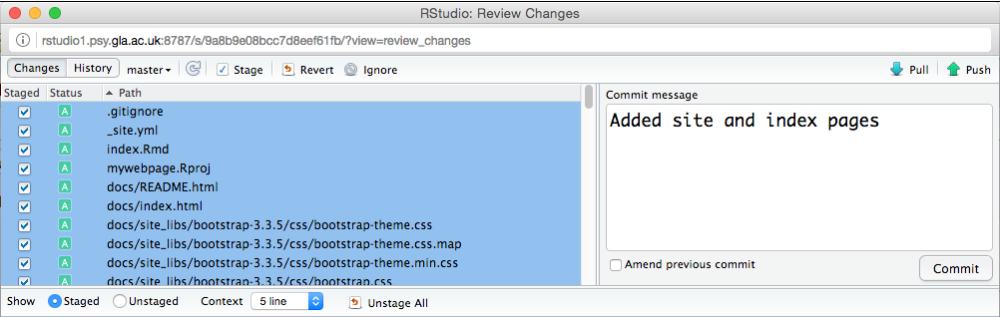
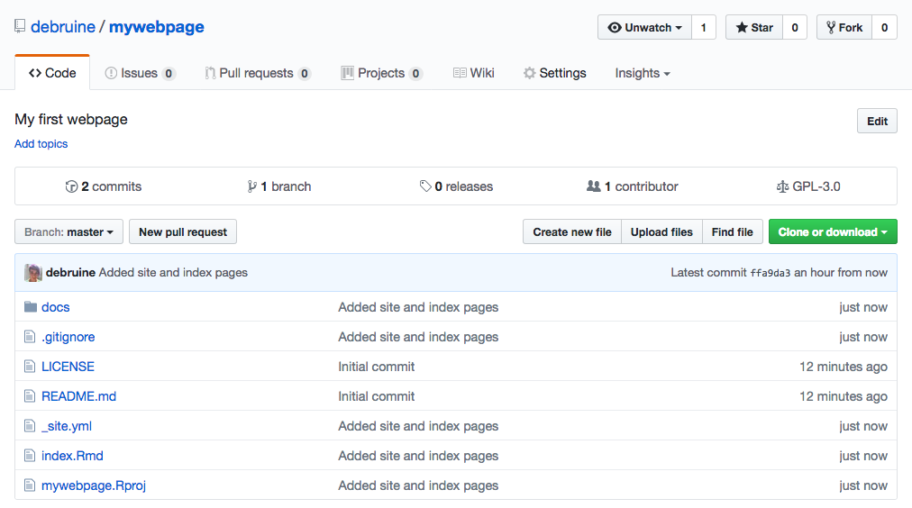
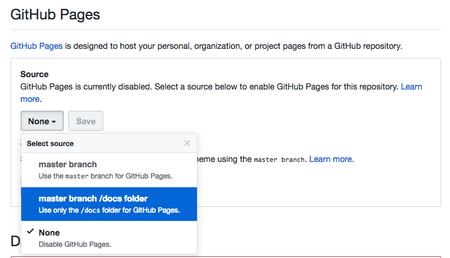

Chapter 5 Webpages
5.1 Learning objectives
5.2 Create a webpage
5.2.1 Create a project
- Choose
New Project...from theFilemenu (don’t save any workspaces) - Choose the
Version Controloption If you don’t have this option, set up git using the instructions in Appendix @ref(#setup-git). - Choose the
Gitoption to clone a project from a git repository Set the
Repository URLThis will look something likessh://git@github.com/USERNAME/mywebpage.gitorgit@gitlab.com:USERNAME/mywebpage.git. Make sure to replaceUSERNAMEwith your GitHub or GitLab username andmywebpagewith the name of your project if you didn’t use that name.
Type in your SSH passphrase
5.2.2 Site header
This is where you can set options like whether to show a table of contents and what the navigation bar will look like. We’ll edit this later to add a section menu.
- Make a new file
Choose
New File > Text Filefrom theFilemenu - Put the following text in the file:
name: "mywebpage" author: "YOUR NAME" output_dir: "docs" output: html_document: self_contained: no theme: flatly navbar: title: "My First Webpage" - Save the file as
_site.yml(do not change the name)
5.2.3 Site script (only for GitLab)
This file contains instructions for copying files from your private GitLab repository to the public web resources. You don’t need it for a GitHub website because all the files are public.
- Make a new file
Choose
New File > Text Filefrom theFilemenu - Put the following text in the file:
pages: stage: deploy script: - mkdir .public - cp -r docs/* .public - mv .public public artifacts: paths: - public only: - master - Save the file as
.gitlab-ci.yml(do not change the name)
5.2.4 Main page
- Make a new file
Choose
New File > R Markdown...from theFilemenu  Replace all of the default text with the following text: ``` — title: “My Website Name” —
I am a postgraduate student in the University of Glasgow’s Institute of Neuroscience and Psychology. I work with Supervisor’s Name ```- Personalise the website name, supervisor name, and supervisor website link.
Save the file as
index.Rmd(do not change the name)
5.2.5 Render the site
- Type
rmarkdown::render_site()into the lower left Console pane. You might get some error messages about the graphics engine. You can ignore those for now. - Click on the
docsdirectory in theFilestab of the lower right pane - Click on
index.htmland chooseView in Web Browser - Check if your links work, edit and repeat if they don’t
5.3 Add content
If you are comfortable with HTML, you can write most of your page in HTML. If not, I’d suggest using rmarkdown, whcih is a simple way to indicate headings, paragraphs, links, lists and images.
5.3.1 Headings and paragraphs
Headings are prefaces with hashes #. The largest, title heading gets one hash and each subheading level adds another hash.
Paragraphs don’t require any special marks, they are just automatically created when you skip a line between blocks of text.
### Headings and paragraphs
Headings are prefaces with hashes `#`. The largest, title heading gets one hash and each subheading level adds another hash.
Paragraphs don't require any special marks, they are just automatically created when you skip a line between blocks of text.5.3.2 Links
Links are just text surrounded by square brackets, followed by the URL surrounded by parentheses. Start the URL with http:// if it’s an external website. If you want to link to one of your own pages, you can just put the name of the page.
I can link to Google or to my own main page.
I can link to [Google](http://google.com) or to [my own main page](index.html).5.3.3 Lists
You can make bullet point lists by prefacing items with * or numeric lists by prefacing them with numbers. Make nested lists by indenting 4 spaces.
Face Research Lab:
- Permanent Staff
- Lisa
- Ben
- Postdocs
- Iris
- Ant
- Kieran
- PhD Students
- Danielle
- Chengyang
- Vanessa
- Jaimie
Things I need to do:
- Finish this lesson
- Write new R script for hormones project
- Write reference letter
- Check Moodle
Face Research Lab:
* Permanent Staff
* Lisa
* Ben
* Postdocs
* Iris
* Ant
* Kieran
* PhD Students
* Danielle
* Chengyang
* Vanessa
* Jaimie
Things I need to do:
1. Finish this lesson
1. Write new R script for hormones project
1. Write reference letter
1. Check Moodle
Notice how the numeric list uses all number 1. You can use incrementing numbers if you want, but using all 1s makes it easier to change the order of your items with out having the renumber.
5.3.4 Images
Images are created much like links. Just put an exclamation mark (!) before the first brasket and put some explanatory text (title and image credit) in the squre brackets, and the image location in the parentheses.
A pangolin, by Bart Wursten
5.4 Add pages
- Create a new .Rmd file for each webpage
- Add content to the webpages (more on this below)
- Type
rmarkdown::render_site()in the Console window
5.5 Styles
5.5.1 Change the theme
The _site.yml file theme option specifies the Bootstrap theme to use for the page. You can use default, cerulean, journal, flatly, readable, spacelab, united, cosmo, lumen, paper, sandstone, simplex, and yeti. Annoyingly, there are no dark themes available by default.
name: "mywebpage"
author: "YOUR NAME"
output_dir: "docs"
output:
html_document:
self_contained: no
theme: flatly
css: style.css
navbar:
title: "My First Webpage" 5.5.2 Add custom styles
You can also add a custom style sheet (a document that determines how each element of your website should look) by adding the line css: style.css under html_document: in the _site.yml file (as above).
Then you need to create a file named style.css and add your custom styles there. The web has thousands of guides to CSS, but codeacademy has great interactive tutorials for learning html, css, and even more advanced web coding like javascript.
However, the basics of css are easy to learn and it’s best to just start playing around with it. Add the following text to your style.css file and re-render the website using rmarkdown::render_site().
5.5.3 Change global fonts and colours
html {
font-size: 2em;
font-family: "Times New Roman";
color: white;
background-color: hsl(360, 100%, 20%);
}This will make all the text on your website twice as large, a different font, and change the text and background colours.
5.5.4 Change certain elements
Maybe you only want to change the font colour for your headings, not the rest of the text. You can apply a style to a specific element type by specifying the element name before the curly brackets.
h1, h2, h3 {
text-align: center;
color: hsl(0, 100%, 20%);
}
h3 {
font-style: italic;
}
p {
border: 1px solid green;
padding: 10px;
line-height: 2;
}
ul {
border: 3px dotted red;
border-radius: 10px;
padding: 10px 30px;
}5.5.4 Example using the styles above
The CSS above changes the styles for three levels of headers (h2, h3, h4) and sets the third level to italics.
5.5.4 Level 3 header
It also gives paragraphs (p) a green border and double-spacing.
5.5.4 Level 4 header
Unordered Lists (ul) get:
- dotted red border
- round corners
- increased padding on top (
10px) and sides (30px)
5.6 Put your webpage online
5.6.1 Save this version with git
- Click on the
gittab in the upper right pane
- Stage your files
Select all (cmd-A) and click on a checkbox in the
Stagedcolumn to select all files
- Commit your changes
Click
Commit. A new window will open. TypeAdded site and index pagesin theCommit messagebox and click Commit  - Close the progress window and the commit window
- Upload your changes
- Click
Push(the green up arrow) - Enter your SSH passphrase
- Close the window when it’s done
- Click
- Go to your GitHub or GitLab page; the new files should be in your repository 
5.6.2 GitHub
To use a GitHub repository as a website, you need to set the source directory the first time you add files to the docs directory.
- Go to the website for your GitHub repository (e.g.,
https://github.com/username/mywebpage) - Click on the
Settingstab and scroll down toGitHub Pages - Under
Source, choosemaster branch /docs folderand clickSave - Click on the link that appears above (e.g.,
https://debruine.github.io/mywebpage/)
5.6.3 GitLab
If you are working in GitLab, your webpage should be created in a minute or two. Just go to the URL like https://myusername.gitlab.io/mywebpage/.